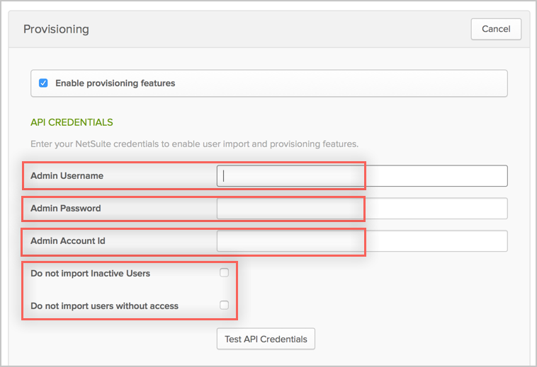
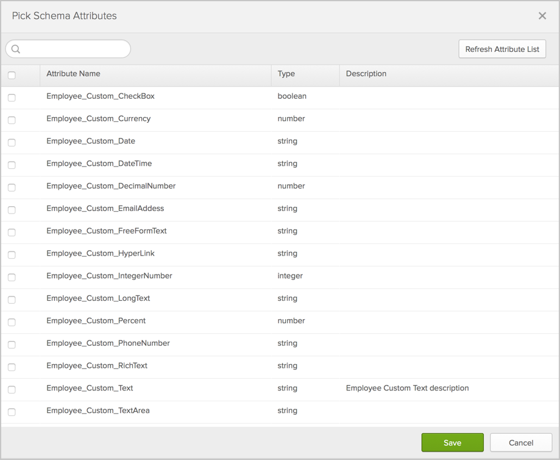
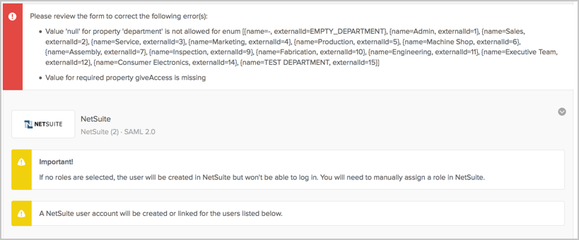
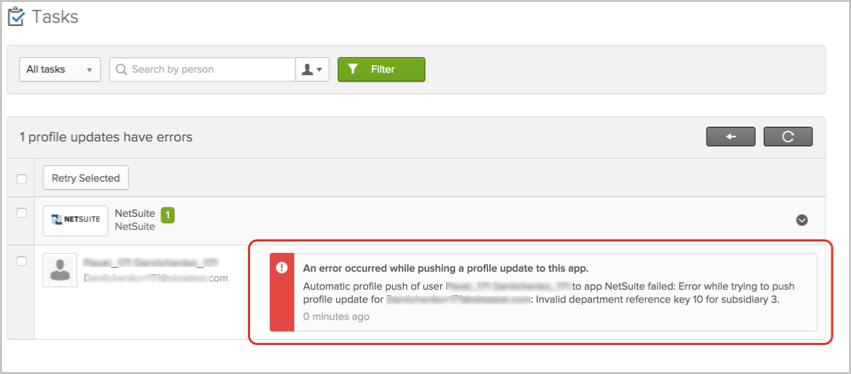

This guide provides the steps required to configure Provisioning for NetSuite.
The following provisioning features are supported:
Complete the following before you configure provisioning for NetSuite:
Enable the Web Services feature (The NetSuite web services feature needs to be enabled prior to submitting web services requests):
Log in to NetSuite as an administrator.
Navigate to Setup > Company > Enable Features.
Select the SuiteCloud subtab.
Check the Web Services box.
Click Save.
Obtain your AccountID:
Still logged into NetSuite as an administrator.
Navigate to Setup > Integration > Web Services Preferences.
Copy and save your Account ID as shown below:

Configure your Provisioning settings for NetSuite as follows:
Check the Enable provisioning features box.
Enter your NetSuite API Credentials
Admin Username.
Admin Password.
Admin Account ID.
Check Do not import inactive users and/or Do not import users without access if you want to ignore those users when importing into Okta.

Scroll down and select the Provisioning Features you want to enable.
Click Save.
You can now assign people to the app (if needed) and finish the application setup.
User Provisioning Notes:
If you have the PROV_NETSUITE_ENABLE_UD feature flag enabled for your org, Okta offers the added functionality to set the Employee's Supervisor attribute. This attribute can only be set for users who are imported into Okta from Active Directory. The Employee's Supervisor attribute maps to the supervisor's User ID in Netsuite.
If you are setting up Netsuite as Master, inactive users and users with insufficient access levels in Netsuite will be deactivated in Okta if you have the following provisioning options enabled in Okta:
Do not import inactive users
Do not import users without access
In order to use schema discovery, make sure you have the UD feature flag PROV_NETSUITE_ENABLE_UD turned on before you create your app instance.
NetSuite supports User's Schema Discovery, so you can add some extra attributes to User's Profile, to do that, follow the instructions below:
In Okta, from the Admin dashboard, select Directory > Profile Editor.
Select the APPS section in the left navigation bar, then find your app in the list.
Check the list of attributes, and if you decide you need more, click Add Attribute. A list of extended attributes will appear:

Select the attributes you want to add, then click Save.
You can now import and push these user attribute values to/from Netsuite.
If you are in the process of creating a NetSuite app instance with PROV_NETSUITE_ENABLE_UD provisioning feature turned on, you will encounter an error similar to the following during the app assignment flow.

The workaround for this is to first create the app instance without assigning it to any user/group. Once the app instance exists, you can then assign the app to the respective people by either:
By User: From the Okta admin dashboard, navigate to Directory > People then assign apps to users.
By Application: From the Okta admin dashboard, navigate to Applications then assign apps to users.
Make sure that the attribute subsidiary has dependency on department. There are not all departments available for each type of subsidiary and as result you may see an error during Push New Users or Push Profile updates, as shown below:

For applications with disabled PROV_NETSUITE_ENABLE_UD feature flag only. When you are changing Subsidiary property for user on OKTA side the Department field will be reset on NetSuite side.